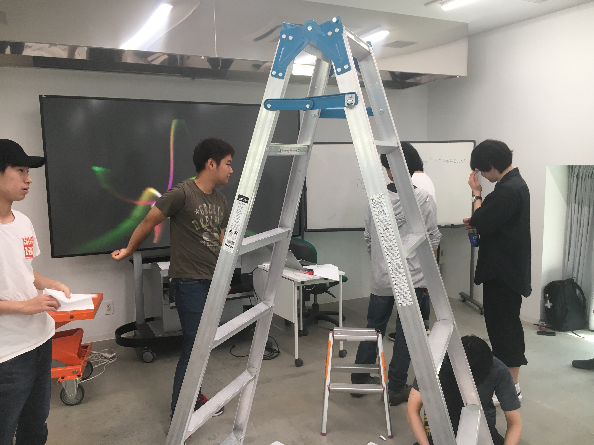

paperplanes
６月７日（木）3,4時間目
◉３人１グループでA４の紙を使って天井に届く建物を作る
私のグループは高さ重視で土台を考えずに組み立ててしまったのですぐ倒れたりした。
他の班は上手に土台を作っていたので高くそして倒れずに組み立てていた。
正直土台がしっかりしていれば天井に余裕で届くという結論が出た。

◉紙飛行機滞空時間のギネス記録に挑戦
３人１組になって教室で紙飛行機を折っては飛ばしてを繰り返したギネス記録にも乗った折り方を折ってもうまく飛ばなかった
この時間で感じた原因は教室の狭さと天井の低さにあると思われた。
こんなに紙飛行機を飛ばしたのは初めてだ
参考にしたサイト
◉OK Go
アメリカで活躍する４人組ロックバンドOK Go初めて見せてもらったpvはカメラワークから、乗り物に乗りながらダンスする彼ら
OK Go - I Won't Let You Down
これは4,2秒の動画がまず流れ、少しするとさっきの動画がスローモションで音楽とともに流れます
よく見ると爆発と音楽が完全にシンクロ
私はこのpvを見たときに凄いとしか思わなかった
OK Go – The One Momen
彼らのデビュー当時のpvは安っぽくどのバンドも取ってそうなpvだった。
OK Go - Get Over It
けれどpv撮影で大金を賭けても大事な感情が伝わらないと思い自分たちでpvを撮影し始めた。
公園で1日かけて寝るところもコマ撮りで撮影、盛大なピタゴラスイッチ。計り知れないほど時間をかけて撮影
根性があるからこういった視聴者を楽しませるpvを撮影することができるのだと痛感
私は、綺麗でかっこいいpvよりも根性あるpvの方が人を感動させることがわかった。
６月８日（金）１〜４時間目
◉体育館で紙飛行機を飛ばす
教室より広くなった分、飛ぶと思われた紙飛行機。予想外に飛ばなかった。それの問題点は
・投げ方
・筋肉不足
・折り方
の問題点があると思われた。
投げ方について、最初はただまっすぐ投げているだけだった。やっていくうちに天井に向けて投げると滞空時間が長くなると実感。
グループのs君と「天国へいってらっしゃい」をキーワードに飛ばすとなぜだかよく飛んだ気がした。
言葉にすると現実になるってこのことだ
筋肉不足については、ガタイのいい男子はよく飛んでいた。
肩の力の入れ肩がわかる人たちはよく飛んでいて、体格や筋肉の問題もあると思われる。
折り方については、どの折り方がいいとかはなく 上記に記載したギネスに載った紙飛行機の折り方が皆折っていた。
他のチームで紙飛行機ではなく、凧揚げやボールを飛ばして空中で分解し花びらが落ちてくるような形を取っていた。
私は紙飛行機以外の方法が思い浮かばなかったのでその考えに至ったのは凄いことだと感じた。
◉大会開始
ギネス記録は29秒、それを目指してみんな投げた私の記録は４秒。ギネスの道のりはまだまだ長かった。
失敗の原因は緊張と投げ方にある。
緊張して「天国へいってらっしゃい」を心で唱えるのを忘れてしまっていた痛恨のミス
けれど19年間生きてきた中で紙飛行機を何体も投げ続けたのは初めてだし、きっとこれからもないだろう。
楽しかったのでよしです。
みんな投げ方に工夫（凧揚げや花びら、助走あり）されていて面白かった。
最後大量に作った紙飛行機をゴミ袋に入れるときは少し悲しかった

６月１３日（水）１〜４時間目
◉人を感動させるペーパークラフト
１限目では３人一組になって相手にことをよく知るというところから始まった。
相手に何が好き？や何をしている？などの質問より、散歩して話す方が自然と言葉が出るので
相手のことをよく知れることがわかった。
２〜３限目では２人１組になって、紙で作った相手を喜ばすモノを作って渡すという授業だった。
私がペアになったのは堀くんという少年だった
堀くんとは入学してからほぼ喋ったことがなく、実はすごく怖い人だと思っていた。
けれど一緒にご飯を食べ、話していくうちに怖い人ではなく とっても優しくて温かい心の持ち主だった。
彼の仲良い子に堀くんはどんな子か聞くと、その子も優しくて怒らないと言っていた。
彼を知る前の怖いとか言っていた私を殴りたい気分だった。ごめんね怖いとか思って
彼はツイッターをやっていて、ツイートを見ればわかると思いフォローした
過去のツイートを見ると部屋が寂しいのでポスターが欲しい と呟いていた
ベースはポスターにし貼るものは彼の飼っている犬、チビ太にした。彼はチビ太をこよなく愛している。
そして菜々緒も好きなので菜々緒も貼った。